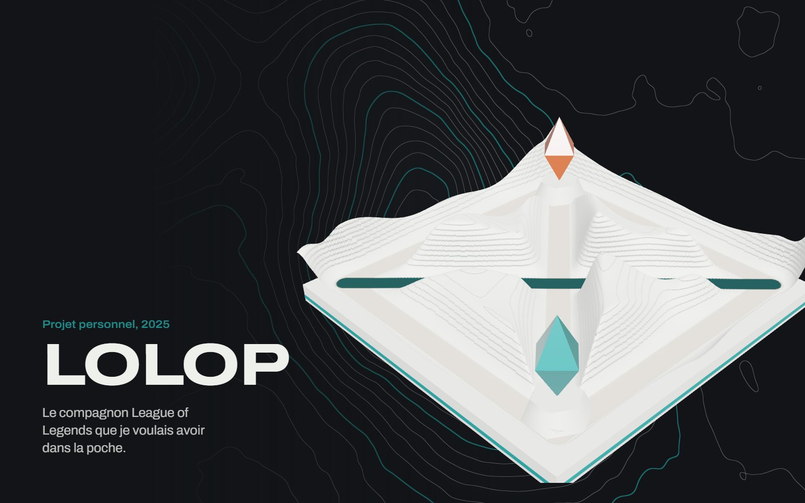
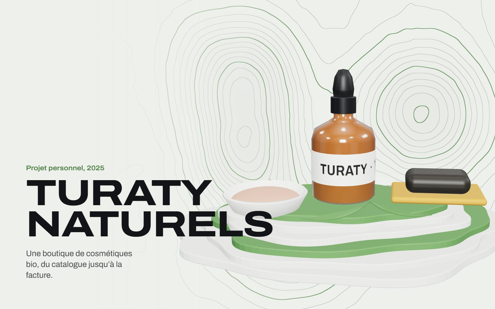
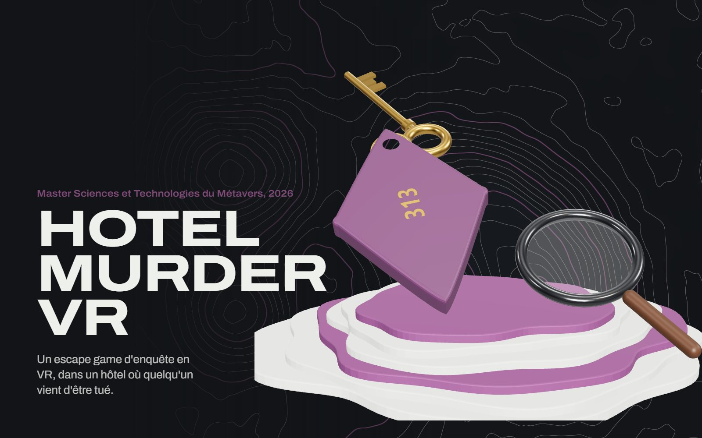
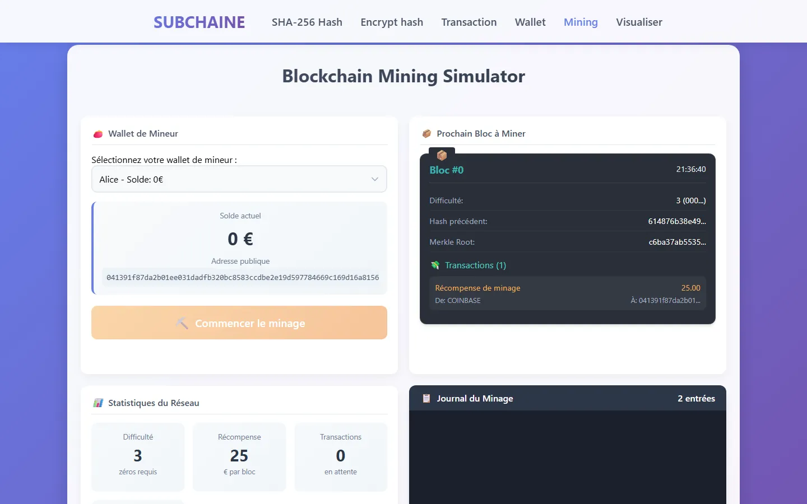
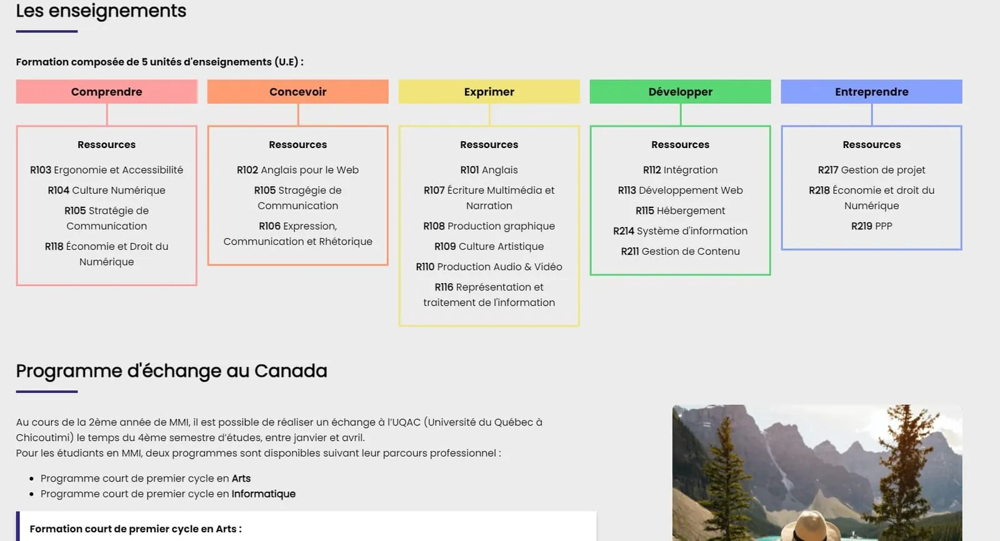
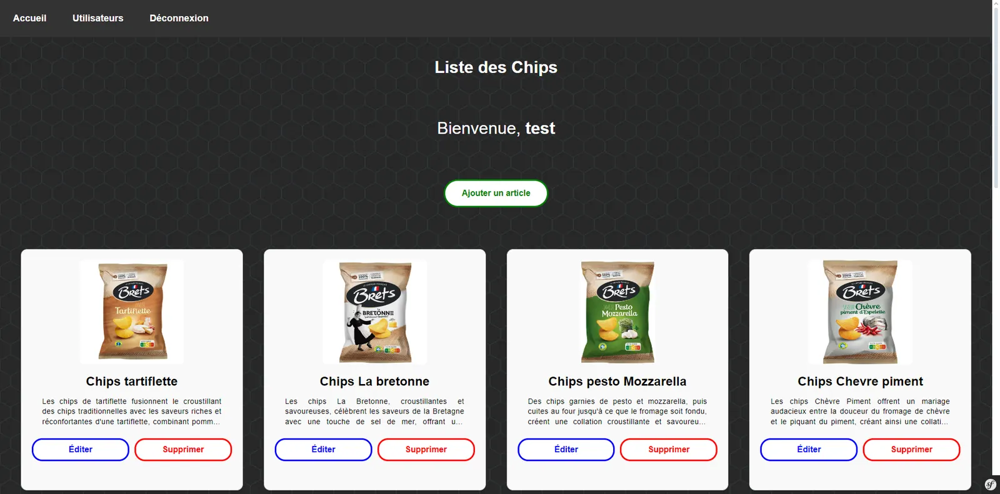
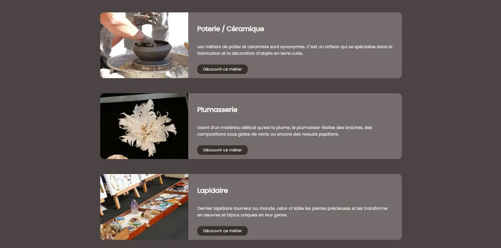
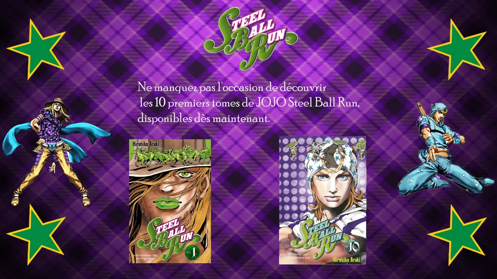

-

BTP-360
2026. Stage de fin d’études. Groupe Sûr France, Troyes.
Conception, développement, mise en production.
Ionic 8, Angular 20, NgRx, Capacitor
-

Distri Sûr France
2024. Alternance. Distri Sûr France, Troyes.
Développeur full stack e-commerce.
Odoo, Python, HTML, CSS
-

Réseau Sûr France
2023. Stage. Réseau Sûr France, Saint-André-les-Vergers.
Design et développement.
WordPress, Figma, Photoshop, HTML
-

SubForge
2026. Projet personnel. Application mobile.
Produit, design, développement.
React Native, Expo, TypeScript, Supabase
-

lolop
2025. Projet personnel. Application Android.
Conception et développement.
Java, Android, MVVM, Retrofit
-

Turaty Naturels
2025. Projet personnel. E-commerce.
Conception et développement.
Symfony 6, Doctrine, MySQL 8, Twig
-

Funfair VR
2025. Master Sciences et Technologies du Métavers. INSA Hauts-de-France.
Développement Unity, interactions VR.
Unity 2022.3, C#, URP, XR Interaction Toolkit
-

Hotel Murder VR
2026. Master Sciences et Technologies du Métavers. INSA Hauts-de-France.
Développement Unity, énigmes et interactions.
Unity 6, C#, XR Interaction Toolkit 3, Audio spatialisé
-

ZABI
2025. Master Sciences et Technologies du Métavers. INSA Hauts-de-France.
Développement full stack.
Node.js, Express 5, MongoDB, API REST
-

SUBCHAINE
2025. Master Sciences et Technologies du Métavers. INSA Hauts-de-France.
Développement.
Node.js, Express, Socket.IO, crypto-js
-

JPO IUT de Meaux
2024. BUT Métiers du Multimédia et de l’Internet. IUT de Meaux, Université Gustave Eiffel.
Modélisation et intégration 3D.
Blender, 3ds Max, Unity, WebGL
-

Gestionnaire d’articles
2024. BUT Métiers du Multimédia et de l’Internet. IUT de Meaux.
Design, intégration, développement.
Symfony, PHP, Twig, MySQL
-

Web-documentaire artisans
2022. BUT Métiers du Multimédia et de l’Internet. IUT de Meaux.
Interviews et design.
Figma, Premiere Pro, HTML, CSS
-

Pub Steel Ball Run
2022. BUT Métiers du Multimédia et de l’Internet. IUT de Meaux.
Scénario, animation, montage.
After Effects, Media Encoder
-
Les 19 autres dépôts
2021 à 2026. Exercices d’école, scripts du dimanche, essais.
Rangés en couches dans le labo, une par année, mis à jour à chaque nouveau dépôt.
Explorer le labo